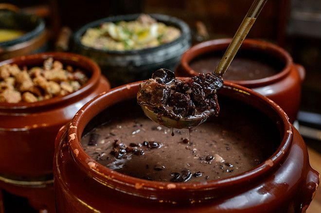
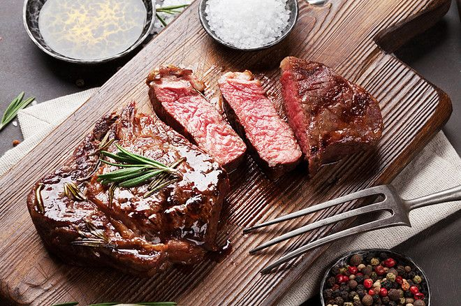
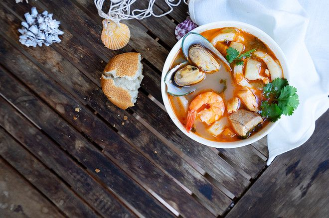

Pratos tipicos
PICADINHO DE CARNE
FEIJOADA CARIOCA
FILÉ À OSWALDO ARANHA
SOPA LEÃO VELOSO
O picadinho de carne está presente na maioria dos restaurantes e bares do Rio de Janeiro e costuma ser servido acompanhado de ovo poché, banana à milanesa e diferentes molhos. Criado em 1950, o prato é parente próximo do cozido português e a carne usada no preparo pode variar entre o filé-mignon, acém ou costela. Para provar um autêntico picadinho, não deixe de visitar o Al-Farabi, localizado em um casarão de 1865, no Centro do Rio de Janeiro. Outra variação do picadinho pode ser encontrada no Zacks, também no Centro do Rio de Janeiro. Por lá, a receita é com carne de frango em cubos ao molho secreto, acompanhando ovos mexidos, farofa, batata frita e banana à milanesa. A casa é um divertido espaço inspirado nos filmes, desenhos animados e músicas dos anos 50 e 60.

A feijoada é uma das principais comidas típicas do Rio de Janeiro e é fácil de ser encontrada em qualquer bairro carioca. Os ingredientes seguem as receitas tradicionais, com pedaços de linguiça, carne seca, paio e costelinha. Para acompanhar, basta o arroz, a couve e a farofa. Para provar uma autêntica feijoada carioca, visite uma das unidades do Botequim Informal no Leblon, Botafogo, Copacabana ou Humaitá. Outros quitutes foram inspirados no prato, como o Bolinho de Feijoada servido no Aconchego Carioca. A massa é feita com os ingredientes da receita batidos, refogados e misturados à farinha de mandioca e ao polvilho azedo, se transformando em uma massa homogênea. Já no Restaurante Couve-Flor, no Jardim Botânico, a massa é envolta em tempurá, deixando mais crocante e mais leve que o empanado comum, encontrado em outros bares. Você também pode provar o Pastel de Feijoada do Bar do Mineiro, no charmoso bairro de Santa Teresa, que pode ser acompanhado da caipirinha feita com cachaça mineira.

O Filé à Oswaldo Aranha é prato típico carioca que consiste em filé mignon ao ponto temperado e servido com alho frito, criado a partir de uma homenagem ao político gaúcho que chegou até a cidade após a Revolução de 1930. O prato surgiu no Restaurante Cosmopolita, frequentado por políticos que costumavam almoçar por ali. Hoje, é Patrimônio Cultural Carioca, e já passaram boêmios famosos como Pixinguinha, Zeca Pagodinho e Martinho da Vila.

A Sopa Leão Veloso é servida om peixe, camarões, mexilhão, lula e siri. Foi criada pelo diplomata Paulo Leão Veloso quando conheceu a Sopa Bouillabaisse no porto de Marselha, na França. Encantado com a receita, resolveu então trazer o prato ao Rio de Janeiro e adaptá-lo ao nosso paladar. Para experimentar esta e outras comidas típicas do Rio de Janeiro, é só procurar o Umas e Ostras, especializado em frutos do mar no bairro da Tijuca. Outro lugar para comer o filé Oswaldo Aranha no Rio de Janeiro é o Café Lamas, localizado no Bairro do Flamengo e que desde 1874 oferece sabor e história aos clientes. Seus mais de 140 anos de tradição já receberam intelectuais, políticos, escritores e músicos, sendo referência até hoje. Além da sopa Leão Veloso, o Café Lamas também tem no cardápio outros pratos típicos cariocas como a Canja e o Filé à Oswaldo Aranha.
